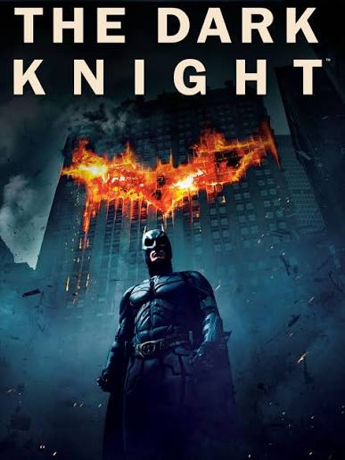
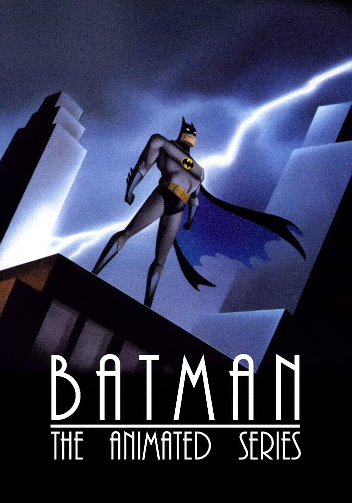
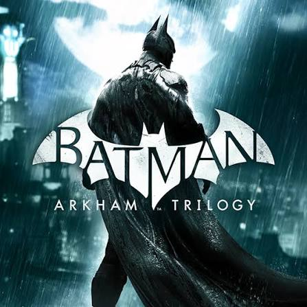
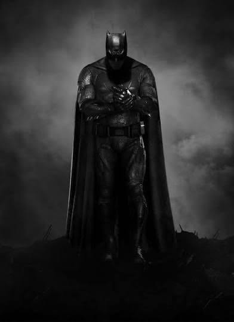

One of the best Batman movies is The Dark Knight, which was released in 2008. The movie was directed by Christopher Nolan and starred Christian Bale as Batman. The movie was a critical and commercial success, grossing over $1 billion worldwide. The Dark Knight is widely regarded as one of the best superhero movies of all time, and it helped to redefine the superhero genre.


Another great Batman media is the animated series Batman: The Animated Series, which aired from 1992 to 1995. The show was praised for its dark tone, complex characters, and mature storytelling. It won several awards, including four Emmy Awards, and is widely regarded as one of the best animated series of all time.
The Batman: Arkham series. The series was developed by Rocksteady Studios and was praised for its amazing and revolutionary gameplay, the freeflow combat system. Its immersive world, and faithful representation of the Batman universe. The series has won several awards and is widely regarded as one of the best superhero video game franchises of all time.


Then there is Ben Affleck. Hes cool and all, But his writing lowkey sucks. Really cool fight scenes ig.